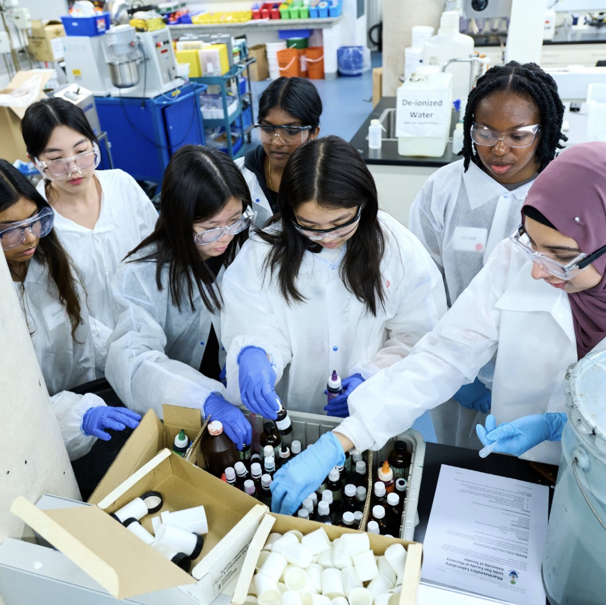

Journey into Healthcare and Pharmaceutical Sciences
Developed and offered by the University of Toronto, Leslie Dan
Faculty of Pharmacy in collaboration with STEM Fellowship.
Photo from the experiential day for high school students at the
Leslie Dan Faculty of Pharmacy, UofT
Photo credits: Reg Good, March 2024
Program Overview
PharmPath 2025
introduces high school students (grades 9–12) to careers in
pharmacology, bioscience, and healthcare. Through hands-on
experiences, interactive activities, and valuable networking
opportunities, students uncover the diverse paths within the
pharmaceutical and healthcare industries.
The pharmacy profession has grown significantly in recent years,
with the COVID-19 pandemic highlighting pharmacists' essential
roles in vaccine administration and community health. Beyond
pandemic response, pharmacists play a crucial part in promoting
wellness, preventing disease, and managing both acute and
chronic conditions.
Despite their importance, pharmacists remain underrepresented in
many economically and socially underserved communities.
PharmPath seeks to bridge this gap by inspiring students from
all backgrounds across Ontario and Canada, fostering a diverse
and inclusive healthcare workforce for the future.

The Program Includes
1. Open-access videos and online role-playing simulations
3 videos highlighting the personal experiences of
pharmacy and pharmacy technician students and
professionals
6 virtual simulation modules highlighting scopes of
practice
2. A one-day experiential learning and exploration event at
the Faculty of Pharmacy
Upon completion of the videos and virtual simulations, 60
students have the opportunity to be invited to the in-person
experiential learning event at the University of Toronto
campus in March. During this event, students will:
Engage with a keynote presentation, a pharmaceuticals lab
activity, and a prescription auditing lab;
Participate in networking with staff, faculty, and current
PharmD students;
Receive a tour of the U of T campus in downtown Toronto
Be provided with free transportation, lunch, and snacks!
*Please note that there are a limited number of spots
available in the program. Admission will be based on an
interview process to ensure the best fit for each student.
3. The Faculty of Pharmacy-based summer camp program
The Leslie Dan Faculty of Pharmacy/STEM Fellowship Summer
Camp offers high school students hands-on learning in the
pharmaceutical, bioscience, and healthcare fields.
The program consists of 6 week-long modules covering
essentials in human physiology, pharmacology, pharmaceutics,
healthcare communication, technology, and business. Students
can register for one or multiple modules, each featuring a
mix of lectures and interactive activities.
Human Body & Physiology
Explore the fundamentals of human physiology by studying
the body’s 10 major systems. Daily sessions introduce each
system’s functions, along with common disease conditions
like asthma, diabetes, and hypertension. Students will
work through assessments, interactive quizzes, and
physical assessments, including neurology, cardiology, and
respiratory testing. Group projects bring it all together,
with students presenting a deep dive into diseases
affecting each system.
Pharmacology
Focuses on the interaction of drugs and the human body.
Students will learn about pharmacokinetics (how drugs are
absorbed, distributed, metabolized, and excreted) and
pharmacodynamics (how drugs affect receptors). Workshops
on drug allergies, EpiPen use, and case studies emphasize
real-world applications. The week concludes with a group
project and a Jeopardy-style drug interaction game.
Pharmaceutics
In the pharmaceutics module, students have the unique
opportunity to create different medication formulations,
from capsules to creams, while learning about compounding,
medication components, and innovative drug delivery
systems like mRNA vaccines. This week is all about
creativity, with lab activities that bring medicine-making
to life.
Communication in Healthcare
Highlights effective healthcare communication, focusing on
health literacy, motivational interviewing, and overcoming
communication barriers. Interactive games, such as
decoding medical instructions and a mock motivational
interview scenario, make this week both educational and
fun. An escape room and ultimate frisbee tournament cap
off the week, teaching teamwork and communication skills.
Technology & Business in Healthcare
A 2-week module that explores technology’s role in
healthcare, covering topics like blood glucose monitoring
and AI in medicine. Students will also learn business
fundamentals, including market research and strategic
planning, before creating and pitching a healthcare
business plan.
Questions Occurred?
If you have any questions, we are glad to assist you. Please
don’t hesitate to contact us.